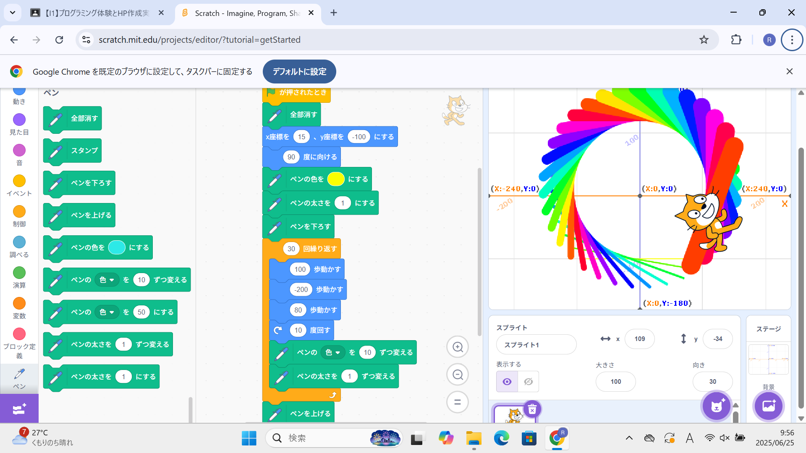
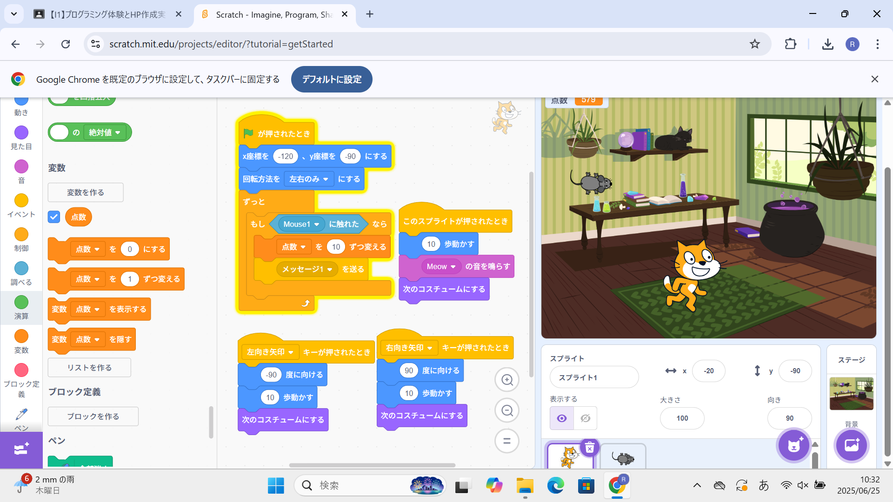

1週目のレポート ： 公大高専１年実習I-1
2a班6番 ぴーまん
第1週目
1-1 サイエンスアート

1.内容
scratchを使って、好きな図形を描く方法を学んだ。繰り返しや複製を使った楽に作れる方法を学んだ。
また、ペンの色を変えたりして、基本的なプログラミングの作り方を学んだ。
2.感想
思っていたよりもたくさんの機能が付いていて、簡単な操作でプログラミングをすることができて驚いた。 一つの動作でもたくさん命令をしないといけないのでプログラミングは根気が必要だなと感じた。
1-2 ゲーム

1.内容
猫が落ちてくるものを拾うゲームの作り方を学んだ。コスチュームや音声を変えたり、コスチュームを隠したりする方法を学んだ。
また、勝手にずっと物が落ちてきたり、ランダムな速さや場所に落ちてきたりするようなプログラミングの仕方を学んだ。
2.感想
初めてゲームを作ったので、新鮮で楽しかった。コスチュームや音声など自分で決めれたりして、思っていたよりもいろんな動作をscratchで使えてびっくりした。
ずっとランダムに落ちてきたり、スコアが表示されたり、本当にあるようなゲームを作れてすごくうれしかった。
1-3 ホームページ作成
私のホームページ
1.内容
自分のホームページを作った。ホームページを書き換えたり、写真を張り付けたりした。
自分のホームページに移動したりする方法も学んだ。
2.感想
英語ばかりだったため、ほとんど読めなくて説明に遅れたときに追いつくのがすごく難しかった。
ホームページを一つ書き換えるのにもたくさんの動作が必要で大変だったため、ホームページは自分が思っているよりも大変で時間がかかっていたんなと感じた。
各ページへのリンク
1週目のレポート
2週目のレポート
3週目のレポート
私のホームページ